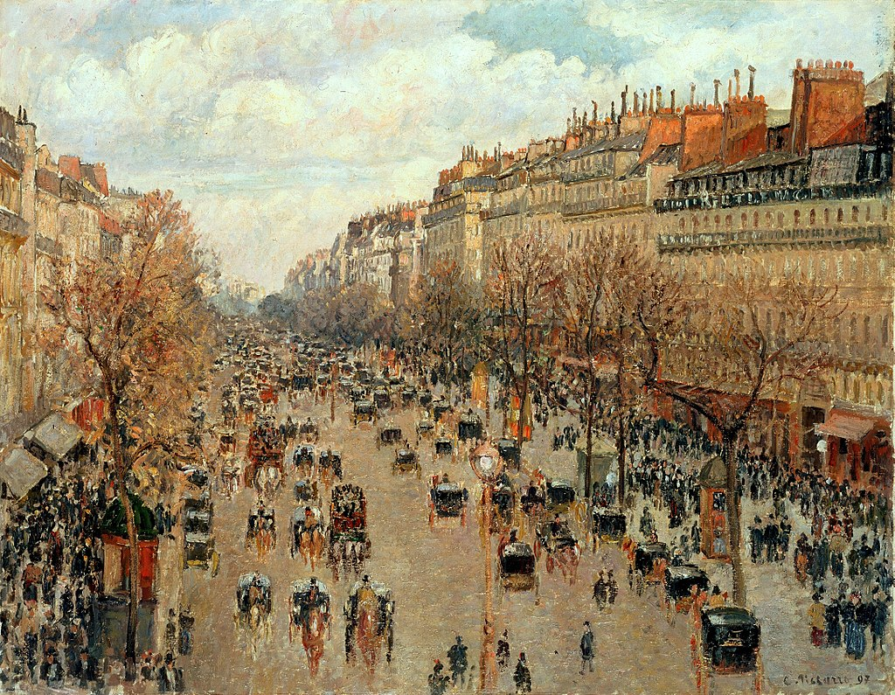

<head>
<meta charset="UTF-8" />
<meta name="keywords" content="drawing, painting" />
<meta name="description" content="drawings by Sunjy" />
<title>Sunjy</title>
<link rel="shortcut icon" type="image/x-icon" href="../../mImages/mCommon/favicon.ico" media="screen" />
<link rel="stylesheet" type="text/css" href="../../mCsses/mCommon/mCssA.css" />
<link rel="stylesheet" type="text/css" href="../../mCsses/mCommon/mCssB.css" />
<link rel="stylesheet" type="text/css" href="../../mCsses/mCommon/mCssC.css" />
<link rel="stylesheet" type="text/css" href="../../mCsses/mCommon/mCssD.css" />
<link rel="stylesheet" type="text/css" href="../../mCsses/mContent/mCssA.css" />
<link rel="stylesheet" type="text/css" href="../../mCsses/mContent/mCssB.css" />
<link rel="stylesheet" type="text/css" href="../../mCsses/mContent/mCssC.css" />
<link rel="stylesheet" type="text/css" href="../../mCsses/mContent/mCssD.css" />
</head>
<script type="text/javascript" src="../../mScripts/mContent/mContentAA.js" /></script>
<script type="text/javascript" src="../../mScripts/mContent/mContentAB.js" /></script>
<script type="text/javascript" src="../../mScripts/mContent/mContentAC.js" /></script>
<script type="text/javascript" src="../../mScripts/mContent/mContentAD.js" /></script>
<script type="text/javascript"></script> 
<script type="text/javascript">
document.write('<div class="mImgAbsolute"></div>');
/*
document.write('<p class="mFontSizeBColor" />From a white paper...</p>');
document.write('<table class="center"><tr><td>');
document.write('');
document.write('</td></tr></table>');
*/
</script>


<script type="text/javascript">
document.write('<p class="mFontSizeBColor" />Boulevard Montmartre: Afternoon, Sunshine </p>');
document.write('<p class="mFontSizeSColor" />“Boulevard Montmartre: Afternoon, Sunshine” by Camille Pissarro became part of a thirteen artwork series of the famous Boulevard. Pissarro painted it in 1897 after renting a room at the Grand Hotel de Russie in Paris with a perfect view. <br><br>Pissarro wanted to capture the true essence of the busy Parisian street. From his elevated hotel balcony, he obtains a bird’ s-eye view of the people, carriages, and life that passed before him.<br><br>Each painting in the “Boulevard Montmartre Series” depicts the same scene and view in different climatic conditions and at different times of the day.<br><br>This painting depicts Paris’ life during the working hours of the day full of activity and purpose. This image portrays a dynamic urban landscape, captured by Pissarro’s rapid brushwork.<br></p>');
document.write('<table class="center" /><tr><td>');
document.write('<br>Pissarro wanted to capture the true essence of the busy Parisian street. From his elevated hotel balcony, he obtains a bird’ s-eye view of the people, carriages, and life that passed before him.<br><br>Each painting in the “Boulevard Montmartre Series” depicts the same scene and view in different climatic conditions and at different times of the day.<br><br>This painting depicts Paris’ life during the working hours of the day full of activity and purpose. This image portrays a dynamic urban landscape, captured by Pissarro’s rapid brushwork.<br>" />');
document.write('</td></tr></table>');
</script>


